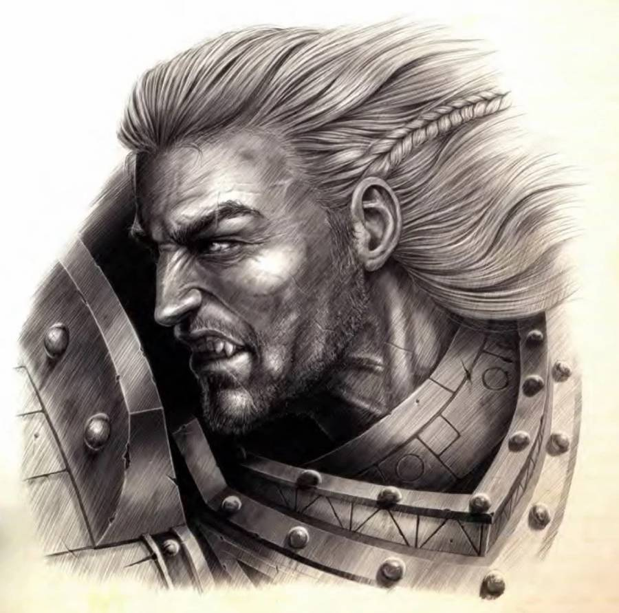

Space Wolves
| Space Wolves VI Legion; Vlka Fenryka, the Wolves of Fenris | |
|---|---|
Badge of the Space Wolves: the head of the Fenrisian wolf Artwork © Games Workshop | |
| Founding | First Founding, c. 700.M30[a] |
| Legion number | VI |
| Primarch | Leman Russ (vanished 211.M31) |
| Leader | The Great Wolf, Logan Grimnar |
| Homeworld | Fenris, a death world in the Segmentum Obscurus |
| Fortress | The Fang |
| Allegiance | Loyalist; Imperium of Mankind |
| Colours | Blue-grey |
| Battle cry | "For Russ and the Allfather!"; Fenrys hjolda! ("Fenris endures!") |
| Organisation | Non-Codex; twelve Great Companies; packs |
| Combat doctrine | Close-quarters assault; the hunt; fierce individual honour |
| Gene-seed | The Canis Helix; the Wulfen |
| Notable battles | |
| Razing of Prospero, Alaxxes Nebula, the Siege of the Fenris System, the war with the Thousand Sons | |
| Successors | |
| The Wolf Brothers (disbanded); the Wolfspear, Icefangs and others recorded in the Era Indomitus | |
The Space Wolves, called in their own dialect of Juvjk the Vlka Fenryka, the Wolves of Fenris, are the VI Legion of the Space Marine Legions and, since the Second Founding, a Space Marine Chapter of the Adeptus Astartes. They were raised from the tribes of the death world of Fenris, and led in the Great Crusade by the primarch Leman Russ, the Wolf King. Their Legion's tradition, as the Emperor's "executioners", was to carry out the orders that other Legions would not. They are renowned for their savagery, their sagas and their contempt for bureaucrats, and are probably the most famous of the Imperium's non-Codex Chapters.[1][2]
The Space Wolves were sent by Horus against the Thousand Sons at Prospero and were deceived into razing it, a deed that began a feud between the two Legions that has never ended. They arrived at Terra too late for the Siege of Terra. In 211.M31 Russ vanished during a feast on Fenris, and the Chapter has since been led by a steward, the Great Wolf, who holds the Chapter in trust until Russ returns for the final battle, the Wolftime. The Chapter did not adopt the Codex Astartes when Roboute Guilliman reorganised the Legions, and instead retained its Great Companies and its packs.[3][4]
In the Era Indomitus the Space Wolves are led by Logan Grimnar, who has been Great Wolf since 440.M41. In 999.M41 the Wulfen of the lost 13th Company returned from the Eye of Terror, and a daemonic invasion of Fenris by the Thousand Sons nearly destroyed the Chapter. The Great Wolf then accepted the Primaris Space Marines that Guilliman and Belisarius Cawl brought, over the objections of some of his Wolf Lords, and the Chapter has since raised new Primaris Successors.[5]
Legion era
[edit]The Wolf King
[edit]
The primarch's pod landed on the icy world of Fenris, where Russ was raised by wolves and later adopted by the tribes. He united the warring tribes of Fenris under his rule and was hailed as the Wolf King, and within his kingdom a truce lay between man and wolf. The Emperor came to Fenris in 819.M30, when the fleets of the Great Crusade heard of the Wolf King and recognised the work of a missing primarch. The Wolf King was brought to Terra and accepted his father's rule, and took command of the VI Legion, which was formed from the warriors of Fenris and was named the Space Wolves.[2]

The Legion was to a large extent Russ's own creation. Its warriors had the Fenrisian tribal culture, with its sagas, deeds and oaths, and the gene-seed that Russ gave the Legion included a strain that was uniquely animal, the Canis Helix. The Legion, which called itself the Rout in its own dialect, fought as a pack, and its warriors were distinguished by long hair, braided beards and wolf-tooth charms. They were also, like their primarch, disdainful of sorcery and trickery, and held that war should be fought in the open.[2][4]
Great Crusade
[edit]The Space Wolves were among the most active Legions of the Great Crusade, and their primarch was credited with more victories than any save Horus and Lion El'Jonson, a fact that irked him. Their campaigns included the compliance of Molech in 869.M30 and the pacification of Dulan in c. 900–950.M30,[a] where a rivalry with the Dark Angels, which would last for the rest of the Imperium's history, began in a quarrel between Russ and the Lion about who should have the honour of defeating the planet's leader. The Emperor used the Legion as his executioner, sending it to punish his enemies and, on occasion, his unruly sons. Russ and the Legion's commanders took pride in the role, though the Legion's critics, among them the Remembrancer Order, held that it was a sign of the Legion's brutal discipline.[2][4]
Horus Heresy
[edit]On the eve of the Heresy, in 004.M31, the Emperor commanded Russ to bring Magnus the Red back to Terra, and Horus, using the primarch's trust, convinced him that the Emperor wished Magnus punished. Russ and the Legion invaded Prospero without parley. In the Razing of Prospero that year, the Space Wolves destroyed the city of Tizca and killed many of the Thousand Sons, but the surviving Thousand Sons, with Magnus, gave themselves to Tzeentch and escaped into the Eye of Terror. The two Legions have been sworn enemies since. The Space Wolves' own tradition holds that a company was sent into the Warp in pursuit of the Thousand Sons, and that company became the 13th.[3][4]
In 007.M31 Horus sent the Alpha Legion against the battered Space Wolves in the Alaxxes Nebula, where the Alpha Legion's agents delayed and harried the Legion, and Alpharius and his elite Terminators fought Russ on the bridge of the flagship. After a failed attempt on the Warmaster's life the Legion was driven to a last stand at Yarant in 012.M31, and it was still far from Terra when the final battle was fought in 014.M31. Imperial accounts say that Horus lowered the shields of the Vengeful Spirit, allowing the Emperor to teleport aboard, because he knew that the Space Wolves and another Legion were close. The two Legions arrived after the battle was over, and Horus and Sanguinius were dead.[3][6]
Chapter era
[edit]Disappearance of Russ
[edit]After the Heresy the Space Wolves took part in the Great Scouring from 014.M31, and they were among the Legions that resisted the Codex Astartes. Russ was by tradition a friend and rival of the Lion, and he refused to divide his Legion by the Codex, though he never formally rejected it. In the Second Founding of 021.M31 the Legion was split into two Chapters: the Space Wolves, which kept the Legion's name, its homeworld and its customs, and the Wolf Brothers, which suffered from mutation soon after its founding and was later disbanded.[7][4]
In 211.M31 all the Space Wolves and their Wolf Lords were gathered on Fenris for the Feast of the Emperor's Ascension. Russ rose to speak and was silent, then left the hall, and was never seen again. The Chapter's tradition holds that he went to search for the Lion in the Eye of Terror; another tradition holds that he walks the Imperium in disguise. What he said in his last hours is also preserved: that when the Chapter was dying and its enemies were gathering, he would come to its aid, "for the final battle, for the Wolftime". Since then the Great Wolf has been regarded as a steward.[4]
The Siege of the Fenris System
[edit]
In 999.M41 the Wulfen of the lost 13th Company returned in dozens of war zones, fighting the daemonic hordes. The Great Companies were sent out to find them, and many packs were located, battling the daemon armies; the Wulfen were brought to Fenris and, after parleys with the Wolf Lords, taken into the Chapter, over the doubts of some. The Wolf Priest Ulrik the Slayer welcomed them as heralds of the primarch's return. Others were suspicious.[4]
The Dark Angels, who had long watched the Space Wolves for signs of heresy, intervened. They found the Scouts they had left at the shrine of Nurades slain, apparently by the Wulfen, and the Supreme Grand Master Azrael led a crusade against Fenris. The whole affair was the work of a Changeling, a daemon in the service of Magnus the Red, who set the two Chapters against each other. The Thousand Sons then descended on Fenris itself with nine of their Silver Towers, fragments of the ancient city of Prospero. The Space Wolves and Dark Angels fought the daemons together, aided by a detachment of Grey Knights, and the invasion was repelled. The bitter feud between the two Chapters was left more bitter.[4]
Era Indomitus
[edit]The Great Rift opened soon afterwards, and in the early 42nd millennium Guilliman brought the Primaris Space Marines to Fenris. Some Wolf Lords argued that the newcomers were not Fenrisian-born and had not passed the Test of Morkai, and a few believed the gift of Guilliman and the Indomitus Crusade to be a ruse to bend the Chapter to the Codex. The Great Wolf Logan Grimnar overruled them, and the Chapter has since formed Primaris packs. The Wulfen have also been integrated, though the Chapter's rites and its Wolf Priests are still uncertain what they are. Chapter tradition holds that the Wolftime is near; Imperial authorities treat the claim with caution, and the Lord Commander has not endorsed it.[5]
The Space Wolves have fought with the Imperium's other Chapters in the Era Indomitus, notably against the Thousand Sons in the Stygius Sector alongside the Dark Angels, and have accepted the Lord Commander's authority without surrendering their independence. Several new Primaris Chapters of Russ's line have been founded, and the Chapter's recruiting in Fenris has been increased.[5]
Organisation
[edit]The Space Wolves do not follow the Codex Astartes. They are divided into twelve Great Companies, each close in size to an entire Chapter, and a symbolic thirteenth that stands for all the companies that have been lost. Each Great Company is led by a Wolf Lord, a warrior-king who takes counsel from a council of elders, and each has its own territory in the Fang, its own forges, vessels and traditions. The Great Wolf, who is chosen from the Wolf Lords, leads the Company of the Great Wolf.[4]
| Great Company | Wolf Lord |
|---|---|
| Company of the Great Wolf | Logan Grimnar, the Great Wolf |
| Deathwolves | Harald Deathwolf |
| Stormwolves | Bjorn Stormwolf |
| Ironwolves | Vorek Gnarlfist |
| Drakeslayers | Krom Dragongaze |
| Blackmanes | Ragnar Blackmane |
| Bloodmaws | Sven Bloodhowl |
| Grimbloods | Kjarl Grimblood |
| Firehowlers | Bran Redmaw |
| Seawolves | Engir Krakendoom |
| Sons of Morkai | Erik Morkai |
| Red Moons | Gunnar Red Moon |
The Chapter's warriors fight in packs rather than squads, formed from battle-brothers who have fought together for a long time. The newest are the Blood Claws, hot-headed and ferocious. The core of the Great Companies is the Grey Hunters, who are veteran battle-brothers, and Long Fangs provide fire support. The Wolf Guard are the Chapter's elite, who serve as the Wolf Lords' companions and are marked in black and yellow. The Wolf Scouts are the Chapter's recon packs, and, unusually, may consist of veterans. Specialists include the Wolf Priests, who tend the wounded and the Chapter's culture, the Rune Priests, who are its psykers, and the Iron Priests, who maintain its machines.[4]

Homeworld and recruitment
[edit]Fenris is an ice-bound death world, and the Chapter's fortress-monastery, the Fang, is built within a mountain on it. Its people are tribal warriors who worship the Allfather, whom they identify with the Emperor, and the legend of Russ. Aspirants are chosen from the tribes by the Wolf Priests and subjected to training. After the first months they must pass the Gate of Morkai, a vast archway in the depths of the Fang, and undergo the Test of Morkai, or the Blooding, in which the aspirant drinks from the Cup of Wulfen, which holds the Canis Helix, and is sent a thousand kilometres into the wastes to survive for a time. Some are lost to Morkai and forgotten. Those who return are admitted as Blood Claws.[4]
Combat doctrine and culture
[edit]The Space Wolves prefer close combat and favour the hunt. Their Chapter is not noted for subtlety or discipline, and the Imperium's military regards it as being as ill-disciplined as it is fearless. They accept only those Imperial tactics that suit them. In battle their senses of smell and hearing are almost as important as their sight, and they use them to find and track the enemy. Their warriors claim deed-names for great acts, and honour markings are worn over the pack's mark. Great Hunts and beast-hunts are part of the Chapter's life.[4]
The Chapter's beliefs are those of Fenris. The Space Wolves tell sagas of star-striding wolves and monsters, are suspicious of advanced technology and sorcery alike, and consider the Emperor, whom they call the Allfather, and Leman Russ the highest examples of Mankind. Their beliefs are regarded with hostility by the Ecclesiarchy, with which they have come to blows. They describe a warrior's soul as a thread, and when it is severed they hold a sending-away feast. The Chapter keeps the Grand Annulus, a record of the Great Companies, on which a black stone stands for the 13th.[4]
Gene-seed and the Wulfen
[edit]The Space Wolves' gene-seed is altered by the Canis Helix. It makes them keener hunters and more ferocious killers, but also more at the mercy of their instincts. The helix is necessary, as the other implants cannot take without it, but it kills many aspirants and turns others into mutants. Survivors grow long canines, yellow eyes and heavy body hair as they age, and the Mark of the Wulfen usually appears in the Neophyte. When a Space Wolf is exposed to great quantities of Warp energy, or loses control of his rage, he may become a Wulfen, a lupine, bestial warrior who is, curiously, more resistant to the corruption of Chaos than an ordinary Marine. The 13th Company's pack of Wulfen is thought to have survived ten thousand years in the Eye of Terror for this reason, and Mechanicus scholars have suggested that the flaw may be a form of defence.[4]
Successor Chapters
[edit]The Space Wolves have raised few Successors. The Wolf Brothers, who were created at the Second Founding, were disbanded after their gene-seed turned unstable, and the existence of others has often been in doubt. In the Era Indomitus several new Chapters have been raised from the Primaris stock of Russ's gene-seed, among them the Wolfspear, the Icefangs, the Mooneaters and the Blood Wolves, and a Chapter called Skyrar's Dark Wolves is unconfirmed.[8][5]
Relations with other institutions
[edit]The Space Wolves show little respect for the Administratum or the Ecclesiarchy, and have been known to answer requests for records with silence. Their relations with the Inquisition are uneasy: the Chapter has long been watched by the Grey Knights for signs of corruption in its gene-seed and in the Wulfen. They honour a few outsiders, notably the line of House Belisarius on a nearby knight world and the Lord Solar Macharius, whose crusade they once joined, and they take part in the Deathwatch as other Chapters do. Their contempt for the Remembrancer Order and for bureaucrats in general is proverbial, but they have always answered when the Emperor's name was invoked.[4]
Notable members
[edit]| Name | Era | Notes |
|---|---|---|
| Leman Russ | Legion | Primarch of the VI Legion; vanished 211.M31 |
| Logan Grimnar | M41 | The Great Wolf since 440.M41 |
| Ragnar Blackmane | M41 | Wolf Lord of the Blackmanes; the youngest Wolf Lord in the Chapter's history |
| Ulrik the Slayer | M41 | Wolf Priest; mentor of the Great Wolf |
| Njal Stormcaller | M41 | Rune Priest |
| Arjac Rockfist | M41 | Wolf Guard and Champion of the Great Wolf |
| Bjorn the Fell-Handed | All eras | Venerable Dreadnought of the Chapter |
| Harald Deathwolf | M41 | Wolf Lord of the Deathwolves |

Timeline
[edit]| Date | Event |
|---|---|
| c. 700.M30 | The VI Legion is raised on Terra in the First Founding.[a] |
| 798.M30 | The Great Crusade begins. |
| 819.M30 | The Emperor reaches Fenris; Leman Russ takes command and the Legion recruits from the Fenrisian tribes. |
| 869.M30 | Compliance of Molech. |
| c. 900–950.M30 | Pacification of Dulan; the feud with the Dark Angels begins.[a] |
| 004.M31 | The Burning of Prospero; the Thousand Sons flee into the Eye of Terror. |
| 007.M31 | Ambush by the Alpha Legion in the Alaxxes Nebula; meeting with Jaghatai Khan. |
| 012.M31 | A failed strike at Horus ends in the Legion's last stand at Yarant. |
| 014.M31 | The Legion reaches Terra after the Siege of Terra has ended. |
| c. 014–021.M31 | The Great Scouring; the Legion resists the Codex Astartes.[a] |
| 021.M31 | The Second Founding: the Space Wolves and the Wolf Brothers. |
| 211.M31 | Leman Russ leaves the Feast of the Emperor's Ascension and is not seen again. |
| 999.M41 | The Wulfen of the 13th Company return; the Siege of the Fenris System. |
| Early M42 | Roboute Guilliman brings the Primaris Space Marines to Fenris; Logan Grimnar accepts them. |
See also
[edit]Notes
[edit]References
[edit]- ^ Codex Supplement: Space Wolves (9th Edition), pg. 16. Games Workshop. Brooks, Mike. Huron Blackheart: Master of the Maelstrom (novel). Black Library, Chs. 16-17, 19.
- ^ a b c d Dembski-Bowden, Aaron. Betrayer (novel). Black Library, pp. 62, 91-95, 165-167. Wraight, Chris. Battle of the Fang (novel). Black Library.
- ^ a b c Wraight, Chris. Blood of Asaheim (novel). Black Library. Wraight, Chris. Failure's Reward (novella). Black Library.
- ^ a b c d e f g h i j k l m n o p Wraight, Chris. Kraken (novella). Black Library. Wraight, Chris. Sons of Russ (novella). Black Library, Ben Counter, Nick Kymes, and Andy Smillie.
- ^ a b c d Codex Adeptus Astartes - Space Wolves (8th Edition), pp. 4-23, 48. Games Workshop. Codex: Space Wolves (8th Edition), pg. 48. Games Workshop.
- ^ McNeill, Graham. False Gods (novel). Black Library. Counter, Ben. Battle for the Abyss (novel). Black Library.
- ^ McNeill, Graham. A Thousand Sons (novel). Black Library. Abnett, Dan. Prospero Burns (novel). Black Library.
- ^ Lightner, Lee. Engage the Enemy (novella). Black Library. Abnett, Dan et al.. Lone Wolves (Graphic Novel). Black Library.